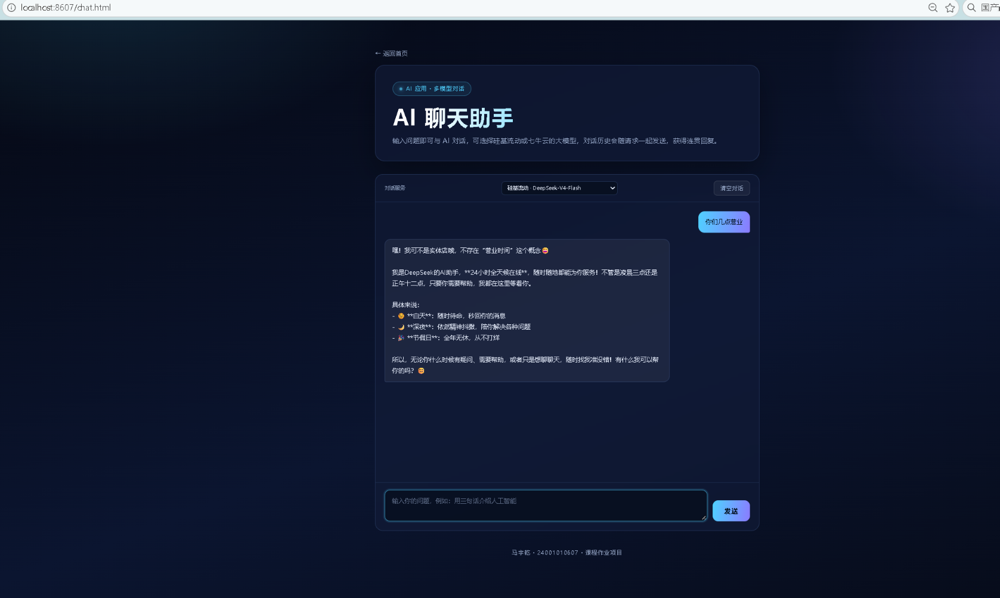
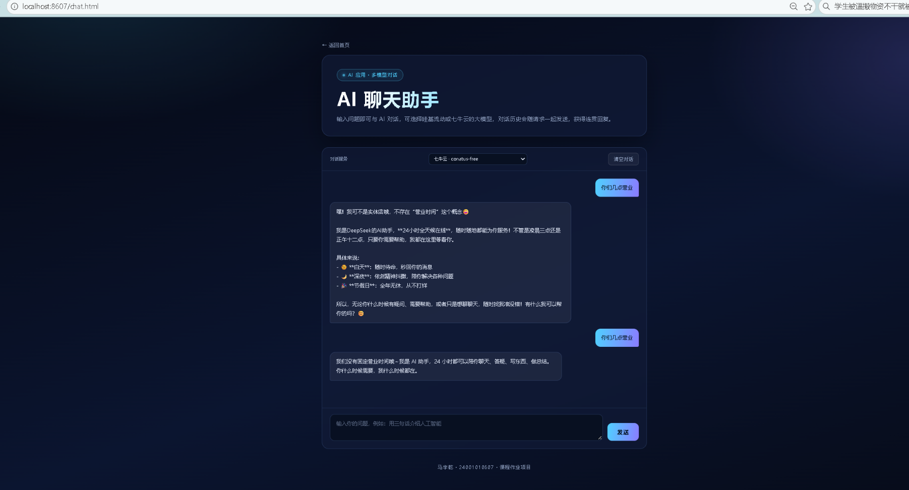
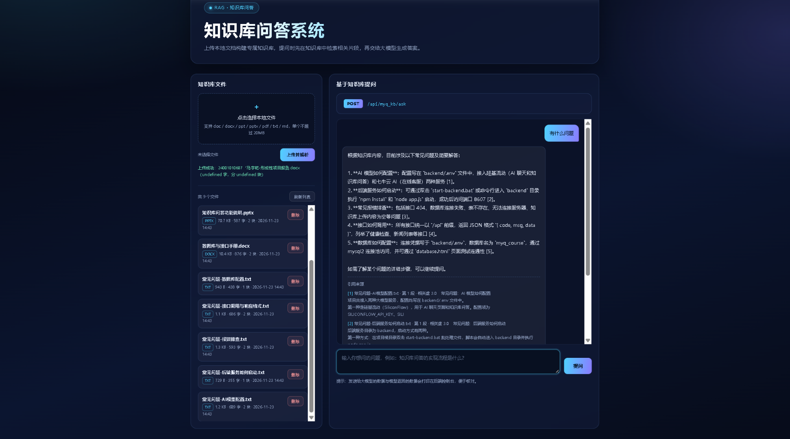
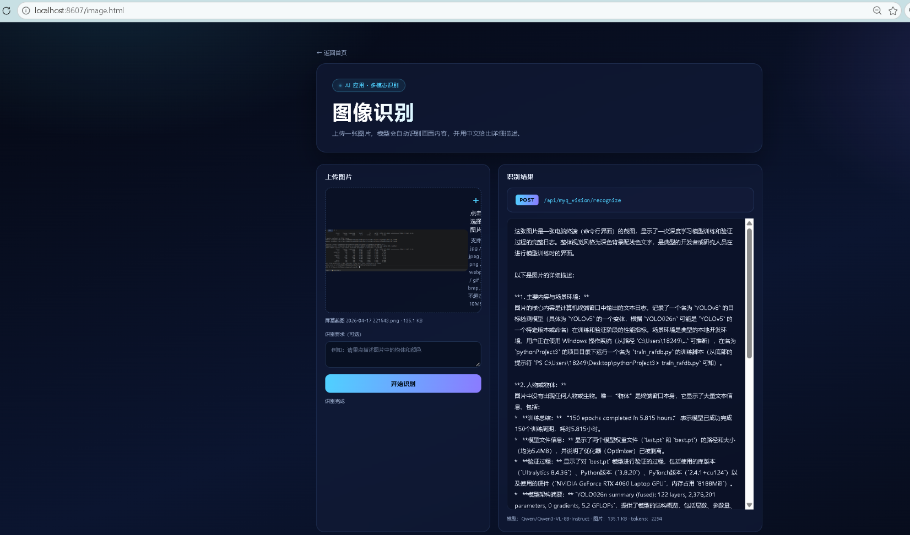
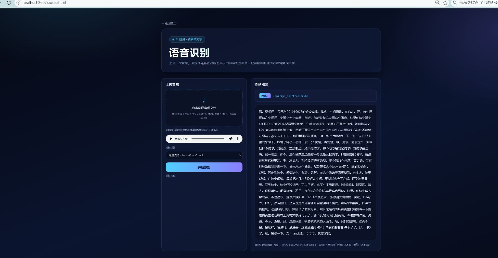

← 返回首页
💬
AI 聊天（切换模型可继续对话）
多模型对话

在 DeepSeek 模型下提问"营业时间"概念，AI 给出条理清晰的结构化解答。

切换到「三七豆 · Condor Flow」模型后，历史对话完整保留，可继续追问同一话题。
在同一对话流中继续询问"北京建国菜都有什么"，模型列出多道菜品及各自特点。
📚
知识库问答
RAG 检索增强

上传本地文档构建专属知识库，提问时先从知识库检索相关片段，再由大模型生成答案。
🖼️
图像识别
视觉理解

上传一张电脑界面截图，模型自动识别画面内容，并用中文文字详细描述图中信息。
🎤
语音识别
语音转文字

上传一段录音，调用七牛云语音识别服务，将音频内容实时转写成文字并标注时间信息。